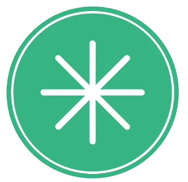

| 삼선대학교 (Samseon University) | |||
| 역사 및 연혁 | 상징 (교훈/교색) | 학부 및 전공 | 대학원 |
| 등기동 캠퍼스 | 총학생회 및 자치기구 | 학내 언론 | 삼선의료원 (부속병원) |
"질병 앞에서는 결코 타협하지 않습니다. 오직 확실한 결과로 증명할 뿐입니다."
학교법인 삼선학원 산하의 사립 상급종합병원. 정식 명칭은 삼선대학교 의과대학 부속 삼선의료원(Samseon Medical Center, SSMC)이다.
효빈시 북구 일대의 중증 응급 환자와 주요 질환을 책임지는 매머드급 대학병원이다. 특이하게도 병원이 삼선대학교 본교 캠퍼스(북구 등기동) 내부에 존재하지 않는다. 대신 1호선과 2호선 환승역이자 효빈종합운동장과 인접한 북구 입희역 일대에 거대한 독립 부지를 확보하여 자리 잡고 있다.
삼선대학교 특유의 엄격하고 원칙주의적인 학풍이 병원에도 그대로 이어져 있어, 의료 사고 발생률이 극히 낮고 감염 관리 지침을 전국에서 가장 깐깐하게 적용하는 것으로 정평이 나 있다. 원칙주의의 화신인 특정 스쿨 아이돌의 성격을 병원 단위로 구현해 놓았다고 보면 정확하다.
1980년대 초 의과대학 설립 인가를 받은 삼선학원은 병원 부지를 두고 깊은 고심에 빠졌다. 본교가 있는 북구 등기동 캠퍼스는 이미 포화 상태였고, 주변이 빽빽한 주택가라 구급차 진입이 용이한 대형 병원을 짓기에는 한계가 명확했다. 당시 재단 이사장은 "의학 교육은 캠퍼스의 고요함 속에서 하되, 환자 구호는 교통이 가장 사통팔달인 곳에서 이루어져야 한다"는 지론을 내세웠다.
결과적으로 1985년 5월, 효빈시의 주요 간선 도로가 교차하고 향후 지하철 환승역이 들어설 북구 입희동 부지에 800병상 규모로 첫 문을 열었다. 병원과 캠퍼스가 떨어져 있어 의대생들은 본과 진학 시 북구로 자취방을 옮겨야 하는 수고로움이 있지만, 환자 접근성 면에서는 신의 한 수가 되었다.
1998년, 병원 바로 맞은편에 효빈종합운동장과 실내 체육관, 야구장 등 거대한 스포츠 콤플렉스가 완공되면서 삼선의료원은 새로운 전환점을 맞는다. 경기 중 부상당한 프로 선수들이 물리적 거리가 가장 가까운 삼선의료원 응급실로 쏟아져 들어오기 시작한 것이다.
병원 측은 이를 기회로 삼아 효빈시 체육회와 MOU를 맺고, 1998년 별관에 '스포츠·관절센터'를 전격 신설했다. 이후 효빈시를 연고로 하는 프로 야구단 및 축구단의 전담 주치의를 삼선의료원 정형외과 교수들이 도맡게 되면서, 전국구 스포츠 재활의 메카로 자리매김했다.
2015년, 삼선의료원은 효빈시 최초로 국제의료기관평가위원회(JCI) 인증을 전 부문 만점에 가까운 점수로 통과하는 기염을 토했다. 당시 평가단이 병원의 감염 관리와 환자 안전 프로토콜을 점검하며 "이렇게까지 결벽증에 가깝게 원칙을 지키는 병원은 드물다"며 혀를 내둘렀다는 일화가 전해진다. 이는 삼선 특유의 자비 없는 '삼선 스탠다드(무관용 원칙)' 덕분이었다.
삼선대학교의 교훈인 '결의, 정진, 봉사'를 각 건물의 이름표로 삼고 있다.
병원의 심장이자 얼굴. 지하 5층, 지상 20층 규모로 진도 8.0을 견디는 완벽한 면진 설계를 자랑한다. 응급의료센터, 중환자실, 중앙수술실 및 대부분의 입원 병동이 위치한다. 로비 바닥이 거울처럼 반짝거릴 정도로 청결을 유지하며, 옥상에는 중증 외상 환자 이송을 위한 헬리패드가 있다. VIP 병동인 18~20층은 최고급 호텔 수준의 보안과 서비스를 제공한다.
본관 우측에 위치한 7층짜리 별관 건물. 정형외과, 재활의학과, 스포츠의학과가 통째로 입주해 있다. 프로 선수들의 빠른 복귀를 돕는 최첨단 수중 재활 치료실(Hydrotherapy pool)과 생체 역학 분석실(Biomechanics Lab), 무중력 트레드밀 등을 갖추고 있다. 일반인도 이용 가능하지만 워낙 유명해 초진 대기만 최소 6개월이다.
입희역 4번 출구와 지하로 바로 연결되는 치과 전용 병동. 구강악안면외과, 치과교정과 등이 있다. 시설이 매우 뛰어나며, 인터넷상에서는 특정 밈 덕분에 교정 치과의 성지로 불린다. (후술할 여담 참조)
본관 6층 테라스에 조성된 대형 공중 정원. 환자복 색깔과 같은 푸른 잔디와 비취색(Jade) 벤치들로 꾸며져 있다. 엄격한 병원 생활 속에서 환자와 보호자들이 유일하게 숨을 돌릴 수 있는 오아시스 같은 공간이다.
모든 임상과가 개설된 매머드급 병원이지만, 지리적 특성과 학풍에 따라 특정 과의 위상이 매우 높다.
이곳 출신 의사나 간호사들은 지역 의료계에서 '삼선 마피아(SSM)'로 불리며, 강한 결속력과 타협 없는 깐깐함을 자랑한다.
원내 규정집이 백과사전 두께를 자랑하며, "대충", "이번 한 번만"이라는 변명이 절대 통용되지 않는다. 손 소독 타이밍 1초, 멸균 가운 착용 방식 하나라도 어기면 레지던트 연차에 상관없이 "규정 위반입니다. 다시 하십시오."라는 서늘한 지적이 날아온다. 타 병원 출신들이 펠로우(전임의)로 왔다가 이 숨막히는FM(Field Manual) 규율에 눈물을 쏟는 일이 다반사다.
현재 의료원장인 신경외과 최진수 교수는 삼선대 의대 1기 수석 입학, 수석 졸업이라는 괴물 같은 스펙의 소유자다. 그는 아침 회진을 돌 때 차트를 제대로 숙지하지 못한 인턴이나 레지던트들에게 서늘한 눈빛으로 이렇게 묻는 것으로 유명하다.
"자네, 환자의 바이탈 수치 하나 제대로 파악하지 못하면서... 과연 이 과가 자네의 적성(適性)에 맞는다고 생각하나?"
이 '적성 공격'은 병원 내에서 일종의 공포의 밈이 되었고, 전공의들끼리 실수를 하면 "너 적성에 안 맞는 듯"이라며 서로 놀리는 자학 개그로 승화되었다.
삼선대학교 본교 못지않게 병원 역시 특정 서브컬처 밈에 잠식(?)당해 있다.
삼선대학교의 교명 모티브가 된 아이돌 캐릭터(미후네 시오리코)의 최고 매력 포인트가 귀여운 '덧니(야에바, 八重歯)'라는 점 때문에, 아이러니하게도 삼선의료원 치과병원은 인터넷에서 '덧니 보존의 성지'로 불린다.[1]
온라인 커뮤니티에서는 "삼선치과에 교정하러 갔더니 교수님이 '덧니는 발치 안 합니다. 그것이 당신의 매력, 아니 적성이니까요'라며 돌려보냈다"는 식의 허무맹랑한 도시전설이 정설처럼 굳어져 있다. 실제로는 부정교합의 정도에 따라 정상적으로 발치 및 교정 치료를 진행하지만, 오타쿠들은 결코 진실을 믿지 않는다.
삼선대학교의 상징색인 삼선 제이드(Jade Green, 비취색) 사랑은 병원에서 광기로 변한다. 병원의 로고, 환자복(일반적인 옥색보다 조금 더 선명한 비취색), 의료진의 ID 카드 목걸이, 수술실 스크럽복, 수액 거치대(IV 폴대), 심지어 외래 약국의 처방전 용지마저 옅은 비취색을 띠고 있다.
구내식당의 수요일 특식 디저트로 민트초코 아이스크림이 고정적으로 나오는데, "이것도 색깔 맞춤이냐"는 원성이 자자하다. 반민초파 환자들의 혈압이 오르는 소리가 들린다.
병원 길 건너편이 종합운동장이다 보니, 야구나 축구 경기가 있는 날이면 병원 고층 병동(특히 남향 창문)은 순식간에 '무료 VIP 관람석'으로 변한다. 저녁에 창가에 모여 링거를 꽂은 채로 야구 경기를 직관하는 환자들의 뒷모습은 삼선의료원만의 명장면이다.
응급실은 경기 날이면 긴장 상태에 돌입한다. 경기 중 다친 선수들뿐만 아니라, 응원하다 열받아서 뒷목 잡고 쓰러진 흥분한 스포츠 팬들이 급성 혈압 상승이나 타박상으로 실려 오기 때문이다.
효빈시 북구와 북구를 잇는 핵심 교통 허브인 입희역에서 도보 5분 거리에 정문이 있으며, 지하철 출구(4번 출구)에서 병원 지하 아케이드가 무빙워크로 직결되어 있다. 비가 오나 눈이 오나 우산 없이 외래 진료를 보러 갈 수 있다.
맞은편 종합운동장을 지나는 수십 개의 시내버스 노선이 병원 앞을 경유하며, 왕복 10차선의 입희대로가 뚫려 있어 구급차 진입도 매우 쾌적하다. 병원 주변 상권은 대형 스포츠 시설을 끼고 있어 대형 프랜차이즈 카페, 헬스 보충제 매장, 유명 국밥집 등이 즐비해, 환자 보호자들의 식사나 편의시설 이용이 매우 편리하다.
※ 오션 뷰를 얻은 대신 교통 오지에 박혀 매일 셔틀버스 전쟁을 치르는 '모 파란색 대학교 병원' 학생들이 삼선의료원의 입지를 보며 가장 배 아파하는 요소다.